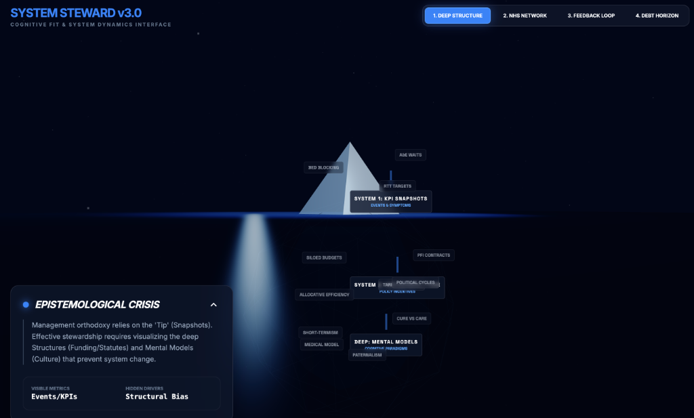

System Steward
Cognitive Fit & System Dynamics Interface for complex adaptive systems.
Launch Tool →Applied ontology graphics and whitelabelable tools for deep knowledge representation.
Deploy powerful visualization engines under your own brand.
Cognitive Fit & System Dynamics Interface for complex adaptive systems.
Launch Tool →A visual tool for exploring multidimensional data and IP ownership narratives.
Launch Tool →Interactive demonstration of the Overton Window concept and political viability.
Launch Tool →Visualization of word clusters and knowledge graphs for semantic exploration.
Launch Tool →Interactive flow of UK health research funding from source to impact.
Launch Tool →Strategic elucidation model tracking systemic degradation and privatisation.
Launch Tool →Comparative analysis of Service-in-Kind vs. Sovereign Equity models.
Launch Tool →Interactive simulation of public/private IP balance and system stability.
Launch Tool →Curated visualizations for complex systems.
Explore the best open-source tools for ontology and graph visualization.
The leading visualization and exploration software for all kinds of graphs and networks.
Visit Project ↗Open source graph visualization software for representing structural information.
Visit Project ↗Web-based Visualization of Ontologies using the Visual Notation for OWL Ontologies.
Visit Project ↗Expert guidance for your ontology visualization needs.
Need help integrating these tools or building custom knowledge graphs? Our team of experts is ready to assist you with architectural planning, implementation, and deployment.
Chat with a Consultant